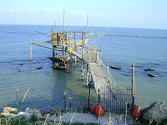

Territorio
La Costa dei Trabocchi corrisponde al tratto di litorale Adriatico della provincia di Chieti (Abruzzo) segnato dalla diffusione del trabocco, macchina da pesca su palafitta.
È un tratto di costa famoso in tutta Italia per la sua bellezza naturalistica, sede di importanti insediamenti turistici. La Costa dei Trabocchi è nota per la sua eterogeneità dove ognuno dei paesi della Costa ha il proprio carattere e le proprie tradizioni.
Il Trabocco
Il trabocco (detto anche trabucco o travocco) è un'antica macchina da pesca tipica delle coste del basso Adriatico, presente lungo il litorale delle province di Chieti, Foggia, Campobasso ed anche in alcuni punti della costa basso tirrenica.
{kind=link}
Il trabocco è un'imponente costruzione realizzata in legno che consta di una piattaforma protesa sul mare ancorata alla roccia da grossi tronchi, dalla quale si allungano, sospesi a qualche metro dall'acqua, due (o più) lunghi bracci, detti antenne, che sostengono un'enorme rete a maglie strette detta trabocchetto.
Geografia del Territorio
{kind=link}
La costa non si presenta omogenea nei vari tratti che la compongono, ma, al contrario, muta notevolmente d'aspetto. Vi sono tratti di spiaggia bassa e sabbiosa (come a Francavilla, Ortona, Casalbordino, Vasto e San Salvo) e tratti a ciottolame (a Fossacesia, Torino di Sangro), oltre a tratti alti e rocciosi (a San Vito Chietino e Rocca San Giovanni). La fascia costiera si fa strada tra vallate e colli che, terminando sul mare, danno vita a paesaggi e ambienti naturali di vario genere.
Economia
La regione ha un forte indotto economico grazie al turismo, molto presente grazie all'eccezionale paesaggio della costa che è rimasto nell'immaginario collettivo di molti stranieri come uno dei simboli dell'Italia.
Testi e foto by Wikipedia
Ultime News
Non riesco ad eseguire la query. Linea: 10Iscrizione Newsletter
Sottoscrivi la tua e-mail alla nostra newsletter, sarai aggiornato sulle nostre novità, prodotti e offerte!